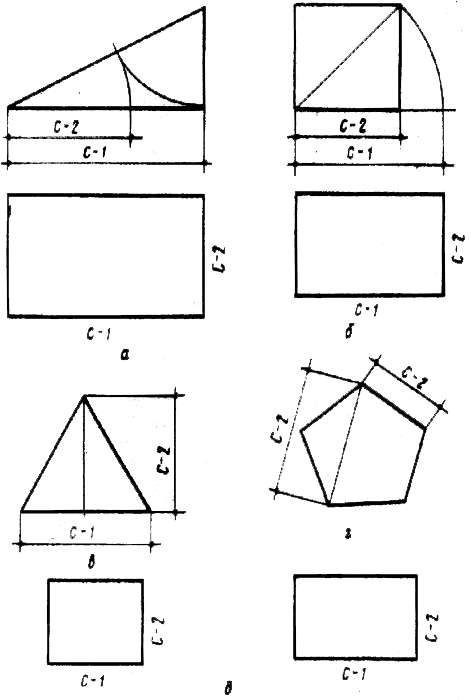
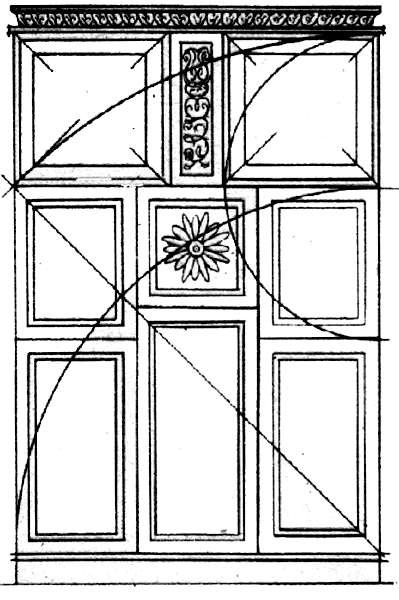

Соподчиненность предметов мебели.

К средствам, повышающим гармоничность, относятся использование пропорций, группировка отдельных частей для создания внутреннего равновесия, использование стыков деталей для гармонизации переходов от одной части к другой, связи их между собой и окружающим пространством, определение размерности частей и деталей для создания масштабности вещи, что является одним из главных качеств композиции предмета. В каждом из этих средств имеются практические приемы, дающие композиции необходимое качество.
Пропорции определяют соотносительность деталей между собой и предметом в целом. Они выражаются в основном размерными соотношениями, которые можно заранее вычислить. Соотношение тона, цвета, контраста и нюанса также можно выразить пропорциями, но их количественное определение базируется уже на внутреннем чутье мастера.
В природе существует несколько линейных соотношений, на которых построены многие объекты. В частности, так называемое «золотое сечение» можно найти в построении цветов и плодов, в движениях волн, естественных осыпях песка. Фигуры, построенные на таких пропорциях, приятны для глаза. Они характерны для развивающихся композиций, которые как бы вырастают из некоего устойчивого центра или главного элемента, подобного растению. В мебели их применяют на боковых, периферийных частях.
Приятные пропорции имеют фигуры, построенные на пятиугольнике. Для создания впечатления большей устойчивости обычно пользуются пропорциями, построенными на основе квадрата или равностороннего треугольника – фигур, совершенных по форме.

Рис. 18. Геометрические построения, в основе которых лежат гармоничные пропорции: а – «золотое сечение»; б – квадрат; в – равносторонний треугольник; г – пятиугольник; д – прямоугольники, построенные на соответствующих гармоничных отрезках
«Золотое сечение» представляет собой гармоничное деление в крайнем и среднем отношении и может быть приблизительно выражено дробями 2/3, 3/5, 5/8, 8/13, 13 /21 и т. д. Пользуясь этими пропорциями, можно построить гармоничную композицию.

Рис. 19. Применение пропорции для построения предметов мебели (фронтальная композиция)
При определении пропорций на чертеже границами отсчета являются места перелома формы, если она решается на основе светотени, либо линии стыков деталей, если плоскостная композиция строится на основе контраста составляющих частей.